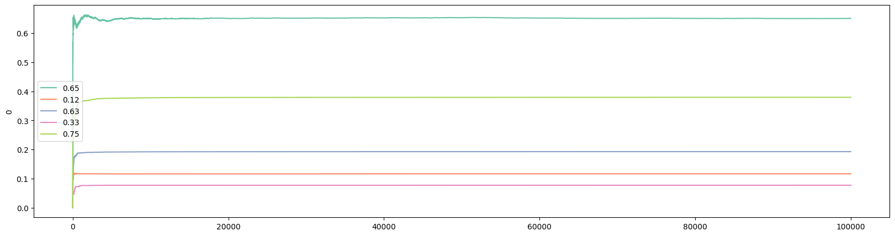

作者： 罗子俊
我们在前面两篇文章里介绍了Epsilon Greedy和Optimistic Initial Values两个算法：
今天，我们继续介绍下一个算法，那就是置信上限（Upper Confidence Bound，UCB）。置信上限算法的数学细节在这里我就不作详细介绍了，反正有那么个不同的公式。但是这个方法的直觉和使用方法还是比较简单的。首先我们来回顾一下Epsilon Greedy和Optimistic Initial Values这两个算法。这两个算法在实现当中有一个相同的步骤：根据之前的结果来计算预期胜率，然后选择预期胜率最高的老虎机。这也是为什么这两个算法都被看作是“贪婪”的原因。现在的问题是，我们有没有办法做得比“贪婪”更好。答案是肯定的。因为预期胜率都是基于概率基础上的，而统计学知识告诉我们，如果我们选择一个老虎机的次数越多，我们对预期胜率会更有信心（confidence），因为当一个老虎机选择次数为无穷大时，预期胜率将收敛到真实胜率。那么，那些不经常被选中的老虎机呢？
置信上限算法要解决的就是这么一个问题。简单来说，置信算法在选择“最优”的时候并不仅仅依赖预期胜率。我们还应该给每个胜率一点额外的“奖励”：如果一个老虎机被选择的次数很多，那么这个奖励应该很小。但如果一个老虎机被选择次数很少，那么它就应该得到一个大大的奖励。就如我们前面说的，一个经常被选中的老虎机，它的预期胜率将会很接近真实胜率。可是一个不经常被选中的老虎机，它有可能一支“潜力股”。
在这篇文章里，我们所使用的“奖励”函数来自于论文Finite-time Analysis of the Multiarmed Bandit Problem。这篇论文的作者构造了一个被称为UCB1的函数：
其中
UCB1的伪代码如下：
loop:
Update UCB1 values
j = argmax(UCB1 values)
x = reward (1 or 0) from playing bandit j
bandit[j].update_mean(x)
跟前面一样，我们把UCB1增加到BayesianAB类当中：
####################
# upper confidence bound (UCB1)
def ucb1(
self,
c = 1,
) -> list:
self.history.append(self.prob_win.copy())
bandit_count = [0.0001] * len(self.prob_win)
# bound = [0] * len(self.prob_win)
for k in range(1, N):
bound = self.prob_win + c * np.sqrt(2 * np.log(k) / bandit_count)
# find index of the largest value in bound
i = np.argmax(bound)
self.update(i, k)
if bandit_count[i] < 1:
bandit_count[i] = 0
bandit_count[i] += 1
return self.history
为了保证分母不为0，我把bandit_count初始值设定为UCB1算法。
UCB1算法有一个参数
通过执行以下代码，我们可以得到UCB1的结果以及相应的可视化：
ucb = BayesianAB(N_bandits)
print(f'The true win rates: {ucb.prob_true}')
ucb_history = ucb.ucb1()
print(f'The observed win rates: {ucb.prob_win}')
print(f'Number of times each bandit was played: {ucb.count}')
# plot the entire experiment history
plot_history(history=ucb.history, prob_true=ucb.prob_true)
这是其中一个次实验的结果：
The true win rates: [0.65, 0.12, 0.63, 0.33, 0.75]
The observed win rates: [0.6505, 0.1165, 0.1928, 0.0774, 0.3794]
Number of times each bandit was played: [99470, 77, 103, 67, 282]

跟Epsilon Greedy一样，在这一个实验中，UCB1并没有成功地在实验结束时找到胜率最高的老虎机。如果我们看一下头100个访客的结果，我们会发现胜率为0.65的那个老虎机在很早就领先了。如果实验跑的时间足够长，UCB1在理论上是可以找到胜率最高的老虎机的。
在下一篇文章，我们将会讨论另外一个我很喜欢的算法，“梯度（Gradient Bandits）”算法。经济学家看到这个算法时，应该都会觉得很亲切。